Case Study — 03
PETRONAS Projects
01Overview
Making complex industrial operations easier to understand and anyone can manage
Oil and gas operations involve complex workflows, safety requirements and large volumes of operational data. So the offshore team need reliable digital tools to understand information, track activities and make informed decisions.
As part of the FPT Software Malaysia vendor team supporting PETRONAS, I contributed to many enterprise products focused on operational dashboards, mobile experiences and data-driven workflows.
My focus was on simplifying complex information, improving usability and creating consistent experiences across multiple product modules.
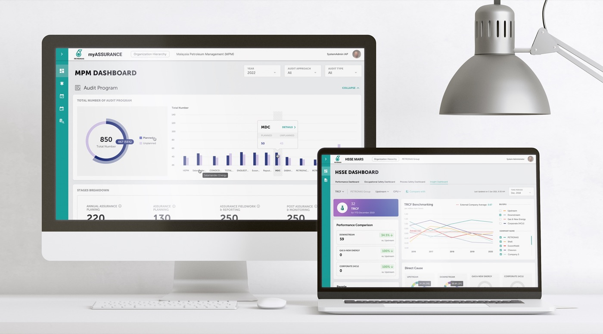
02The Challenge
Poor information hierarchy and data visualization
Enterprise users used to work with interconnected records, technical data and multi-step workflows. However there were a lot of poor information hierarchy that made critical details difficult to find and operational tasks unnecessarily complicated.
The key UX challenges were:
- Information complexity: Organising dense datasets into clear, navigable interfaces.
- Decision support: Presenting KPIs, trends and exceptions in ways that facilitate analysis.
- Workflow clarity: Making record statuses with different colour, responsibilities and next actions easy to understand.
- Product consistency: Maintaining reusable interaction patterns across multiple applications and apply design system correctly.
03The Process
My Approach with Data visualization
Phase 01 — Research & Discovery
Understand users and business requirements.
Identify user pain points, information needs and critical tasks to establish clear design priorities. Brainstorming with stakeholders to finalise business requirement and align with user needs.
Phase 02 — Understanding
Information Architecture
Organise complex operational data, system modules and user journeys into a clear structure. Define navigation, content hierarchy and relationships between dashboards, records and workflows.
Phase 03 — Implementation
Low-fidelity wireframes · User flows · Interactive prototypes
I worked with BAs and draw wireframes, verify multiple time with stakeholder
Develop high-fidelity interfaces with a focus on readability, data visualisation and consistency. Establish reusable components, typography, spacing, colour tokens and interaction states across desktop and mobile products.
Then me and my team would hold a usability workshop to test prototype.
Phase 04 — Handoff
Usability feedback · Design specifications · Developer handoff
We reviewed designs against user needs, operational requirements and usability principles. Refine interactions, document component behaviour and collaborate with developers to ensure design consistency during implementation.
04Conclusion
Designing for precision, safety and operational complexity
Unlike conventional enterprise software, after years working on these kind of dashboards, I found out pipeline integrity systems support engineering decisions involving physical assets, operational safety and environmental risks. Users must interpret technical inspection data accurately, identify anomalies and understand their implications within the context of a pipeline's condition and operating history. This changes my design approach when I was a junior and how I design the design system: clarity and consistency must never come at the expense of technical accuracy or engineering context.
Understand the engineering workflow first
Start by understanding how pipeline engineers and integrity specialists inspect assets, review findings, assess anomalies and plan follow-up actions. Map the relationship between each task, its supporting data and the decisions users need to make.
Design around technical data, not just screens
Inspection results, corrosion measurements, anomaly dimensions and historical records require meaningful context. Visualisations must preserve units, measurement references, data provenance and relevant comparisons rather than reducing everything to generic KPIs.
Prioritise risk without oversimplifying it
Users need to distinguish findings by severity, assessment status and required action. Visual emphasis should support investigation while respecting engineering-defined risk criteria, rather than relying on arbitrary colours or universal thresholds.
Support traceability and informed decisions
Technical findings may need to be traced back to a specific asset, inspection run, location and supporting record. Interfaces should make these relationships visible and preserve the context required for engineering review.
05The Impact
All project collections
myHSSE Mobile
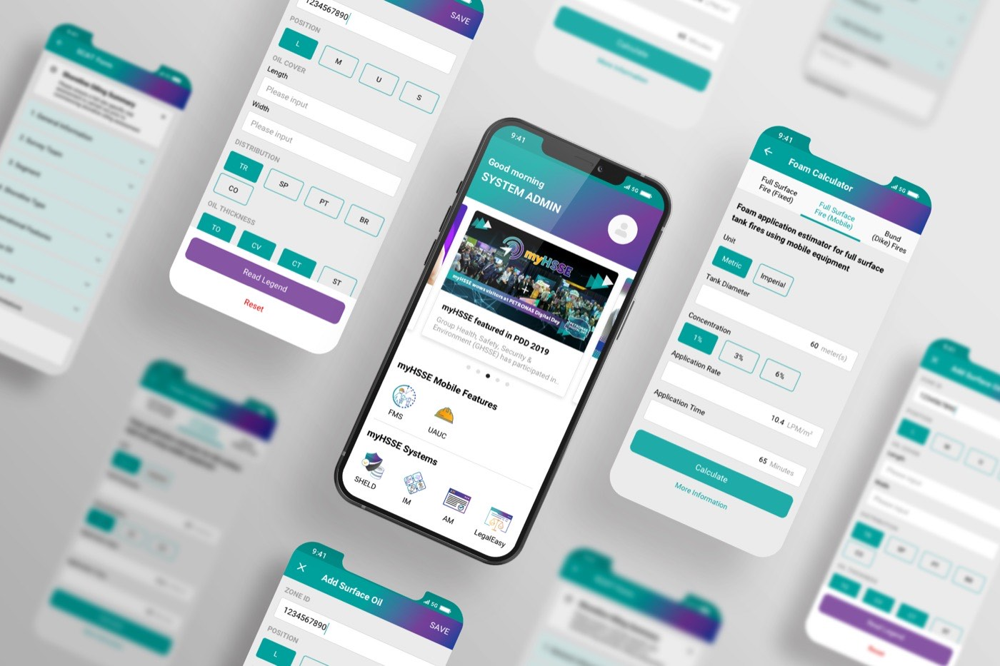
Pivot
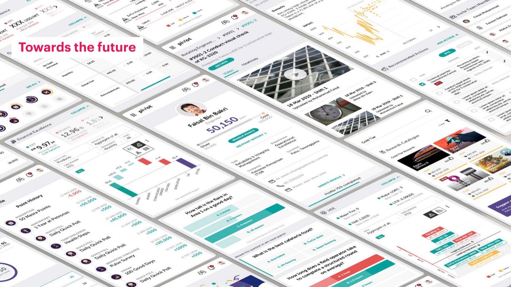
The Compass
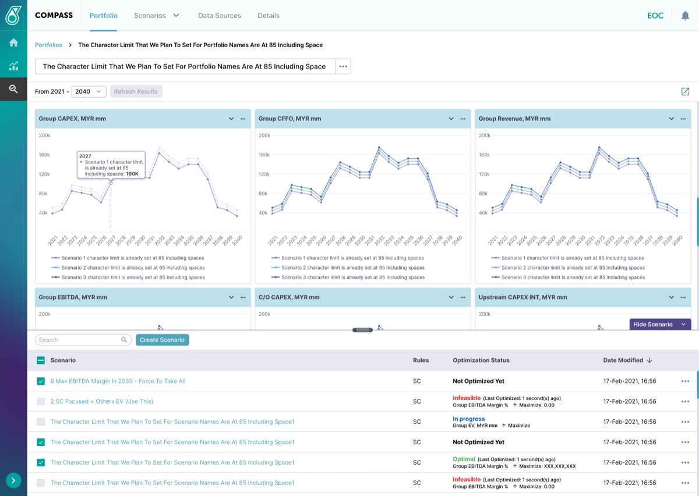
IAP MPM Web Dashboard
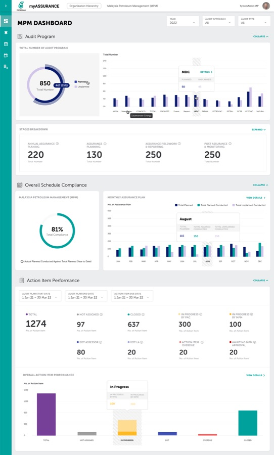
MARS Insight Dashboard
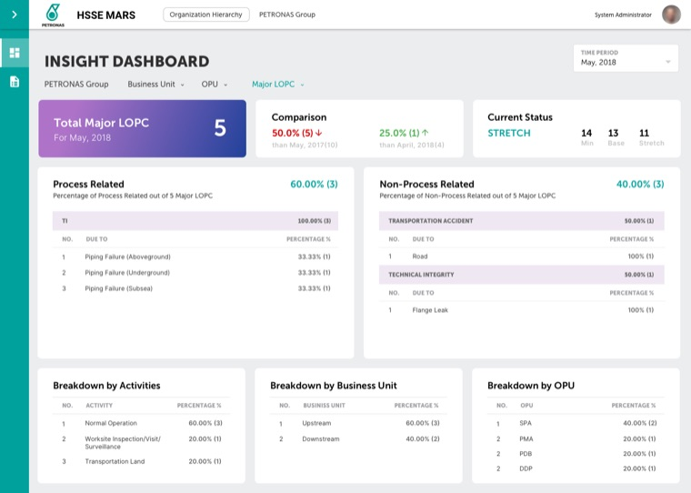
MARS Occupational Dashboard
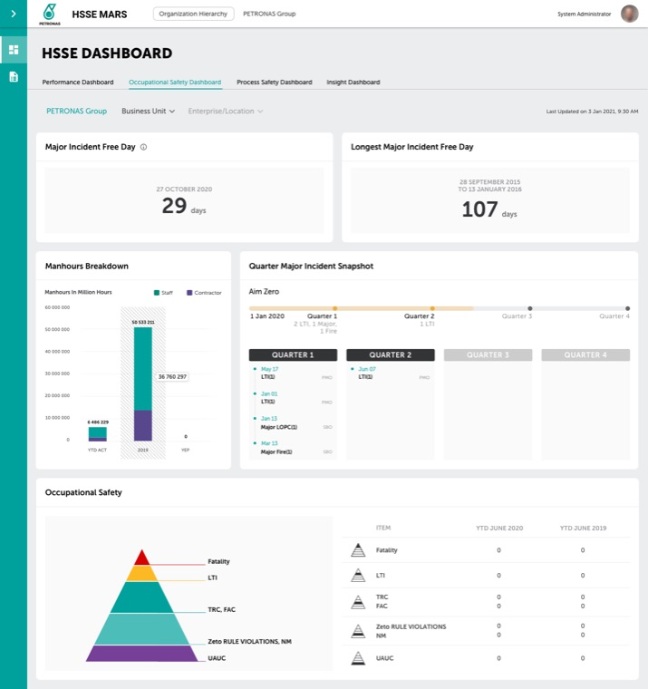
UAUC Web Dashboard
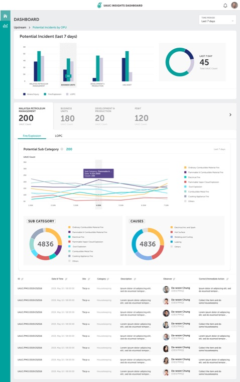
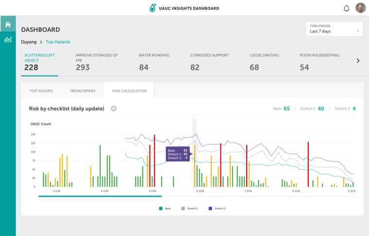
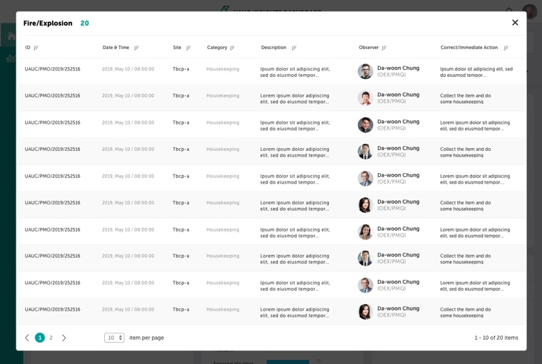
PLANDS
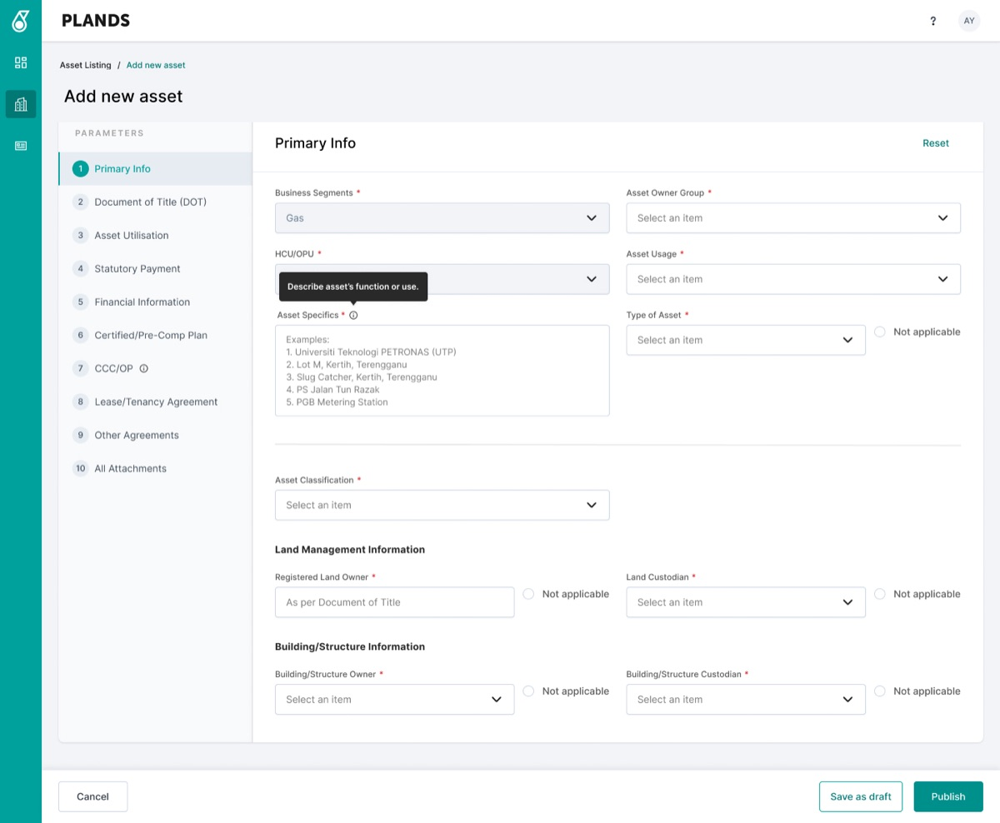
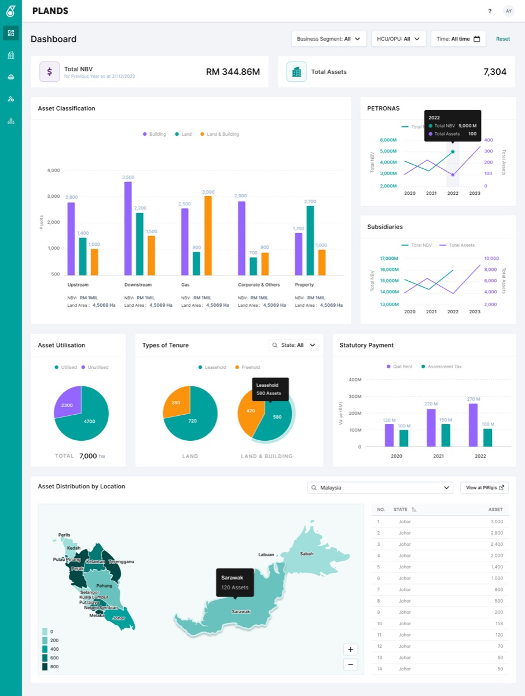
Up NextHMI Automotive Project